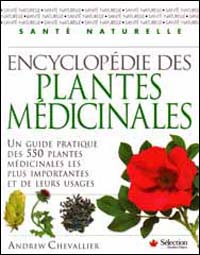
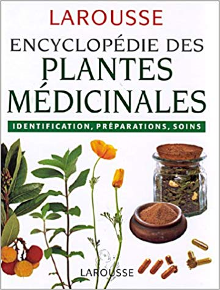

Le présent site est une introduction à l'utilisation des plantes médicinales par Valérie Deschênes et Rosianne Pelletier.
Les traitements à base de plantes
| Documents intéressants à consulter | |||
|---|---|---|---|
| Document | Titre | Éditeur | Liens pour achats et / ou consultation |
|  | Encyclopédie des Plantes Médicinales | Sélection du Reader Digest | www.bottineauxherbes.com |
| Plantes Médicinales | Doctissimo | www.bottineauxherbes.com | |
|  | Encyclopédie des Plantes Médicinales : identification, préparation, soins | Larousse | Amazon |